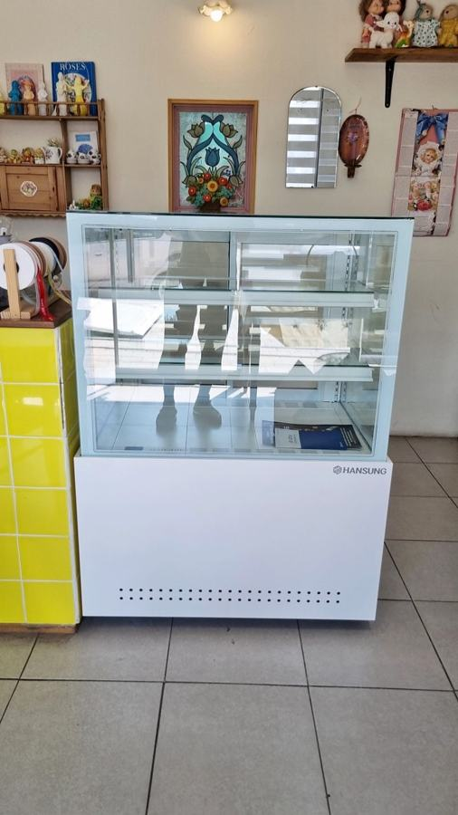
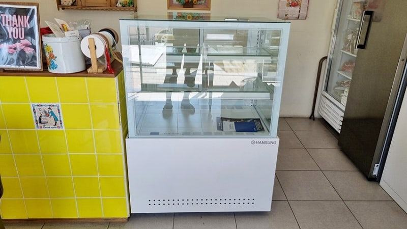
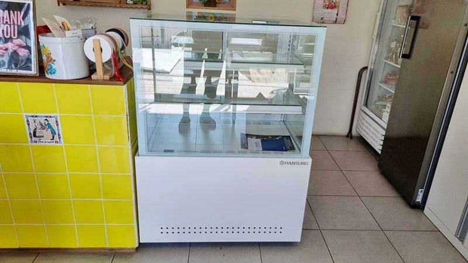
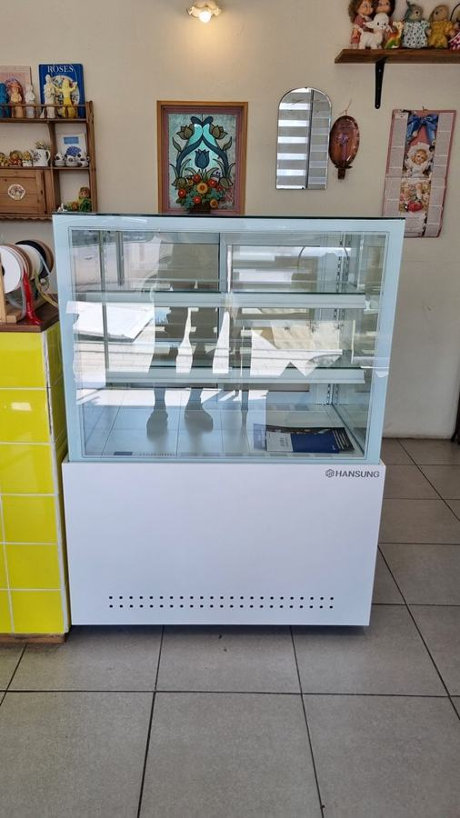
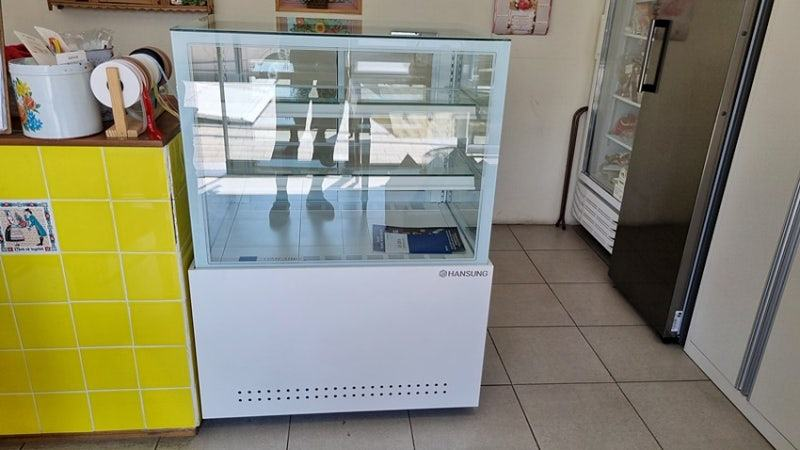
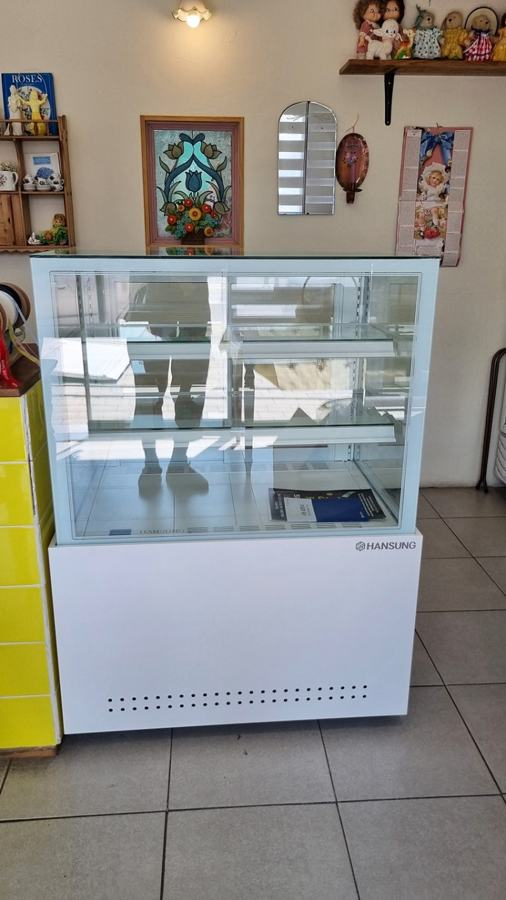
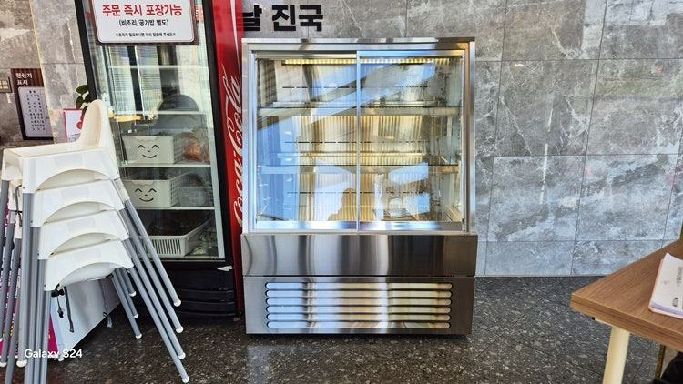
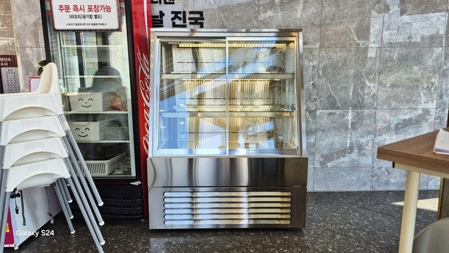
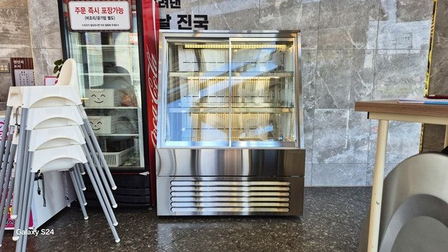

제과쇼케이스
제과쇼케이스 조명, 케이크 색과 크림을 지키는 선택

제과쇼케이스 조명은 상품 색을 왜곡하지 않는 색온도와 열이 적은 LED인지가 가장 중요합니다. 케이크와 생크림 디저트는 자연스러운 주백색 계열, 구운 빵이 주력이라면 따뜻한 색을 섞는 식으로 상품에 맞추고, 조명이 상품 바로 위에서 열을 내지 않도록 위치까지 함께 정하셔야 합니다.
안녕하세요. 베이커리와 디저트 카페의 진열장을 설계하는 한성쇼케이스입니다.
같은 딸기 케이크인데 어떤 매장에서는 유난히 먹음직스러워 보이고, 어떤 매장에서는 왠지 색이 탁해 보이는 경험 있으시죠.
그 차이는 케이크보다 쇼케이스 조명에서 오는 경우가 많습니다.
제과쇼케이스 조명은 상품을 밝히는 역할만 하지 않습니다. 색온도는 손님 눈에 보이는 색을 바꾸고, 조명에서 나는 열은 크림과 초콜릿 장식 상태에 영향을 줍니다.
오늘은 제과쇼케이스 조명을 고를 때 볼 색, 열, 위치를 차례로 짚어 보겠습니다.
1. 조명 색에 따라 상품 색이 바뀝니다
조명 색은 크게 따뜻한 노란빛의 전구색, 자연광에 가까운 주백색, 푸른 기가 도는 주광색으로 나뉩니다.
생크림 케이크나 과일 타르트는 주백색 아래에서 흰색은 희게, 과일은 선명하게 보입니다.
크루아상이나 바게트처럼 구운 색이 매력인 빵은 따뜻한 색 조명 아래에서 더 바삭하고 고소해 보입니다.
반대로 생크림 케이크를 너무 노란 조명 아래 두면 크림이 누렇게 보이고, 너무 푸른 조명은 상품을 차갑고 밋밋하게 만듭니다.
케이크와 빵을 함께 진열하는 매장이라면 칸마다 조명 색을 다르게 하거나, 주력 상품 기준으로 색을 정하는 방법이 있습니다.
- 생크림·과일 디저트는 주백색을 먼저 고려하세요.
- 구운 빵 위주라면 따뜻한 색을 검토하세요.
- 칸별로 다른 색 조명이 가능한지 물어보세요.
2. 열이 적은 조명인지
쇼케이스 조명은 영업 시간 내내 켜져 있습니다. 열이 많은 조명을 쓰면 바로 아래 놓인 케이크 윗면의 크림이 처지거나, 초콜릿 장식이 무르고 윤기가 사라질 수 있습니다.
저열 LED는 이런 영향을 줄여 줍니다. 상담할 때 조명 종류와 함께, 조명이 상품과 얼마나 떨어져 설치되는지도 확인해 보세요.
마카롱이나 무스처럼 표면이 예민한 디저트는 조명과 가까운 윗단보다 가운데 단에 두는 것도 방법입니다.
진열 위치만 바꿔도 오후 늦게까지 처음 모양을 지키기 쉬워집니다.


3. 조명 위치와 빛이 퍼지는 방식
조명이 한 줄로만 들어가 있으면 앞쪽은 밝고 안쪽은 어두워 단마다 밝기 차이가 납니다. 빛을 고르게 퍼뜨리는 확산형 설계인지, 각 단마다 조명이 들어가는지 보세요.
전면 유리가 비스듬한 사선형 쇼케이스는 조명이 상품 전체에 입체적으로 닿아 아래 칸까지 잘 보입니다.
수직형은 상단 프레임 때문에 조명이 뒤쪽으로 치우칠 수 있어 진열 높이에 맞춰 조명 각도를 조정하는 것이 좋습니다.
- 단마다 밝기 차이가 크지 않은지 확인하세요.
- 상품 높이에 맞춰 조명 각도를 조정하세요.
4. 유리와 결로도 조명 효과를 좌우합니다
아무리 좋은 조명을 써도 유리에 김이 서리면 빛이 흩어져 상품이 뿌옇게 보입니다. 특히 여름철 매장 습도가 높을 때 결로가 생기기 쉽습니다.
이중 단열 유리처럼 결로를 줄이는 사양인지 함께 확인하시고, 마감 때 유리 안팎의 지문과 얼룩을 닦아 두세요.
조명은 유리가 맑을 때 제 역할을 합니다.
매장 천장 조명도 함께 보셔야 합니다. 천장 조명 색이 쇼케이스 조명과 크게 다르면 유리에 비친 빛 때문에 상품 색이 섞여 보일 수 있어, 인테리어 단계에서 두 조명의 색을 맞춰 두시면 좋습니다.
체크리스트
- 주력 상품에 맞는 조명 색
- 저열 LED 사용 여부
- 단별 밝기 차이
- 조명 위치와 각도
- 결로를 줄이는 단열 유리
현장에서 자주 보는 경우: 일반 냉장고에 케이크를 진열할 때
케이크는 냉장 보관만 하면 된다고 생각해 일반 냉장고에 진열하시는 경우가 있습니다. 하지만 디저트는 온도뿐 아니라 습도, 바람, 조명 열기 같은 작은 변화에 민감해서 크림이 마르거나 장식이 변색되고 시트가 건조해지기 쉽습니다.
아래 표처럼 제과쇼케이스는 냉기 공급, 선반, 유리, 조명까지 일반 냉장고와 설계가 다릅니다. 특히 조명은 LED 색이 제과류 색감을 왜곡하지 않는지, 오래 켜 둬도 상품이 변하지 않도록 열이 적은지를 기준으로 고르시길 권합니다.








| 구분 | 제과쇼케이스 | 일반 냉장고 |
|---|---|---|
| 냉기 공급 방식 | 미풍 순환으로 건조 방지 | 강한 냉풍으로 급속 냉각 |
| 선반 구조 | 유리 선반으로 온도 균일 | 플라스틱·철재 중심 |
| 전면 유리 | 이중 단열 구조 | 단열 성능 일반 |
| 조명 | 저열 LED 확산 설계 | 열 발생 많은 조명 사용 |
자주 묻는 질문
제과쇼케이스 조명 색은 나중에 바꿀 수 있나요?
제품 구조에 따라 다르지만, 제작 단계에서 정하는 것이 가장 깔끔합니다. 진열할 주력 상품을 먼저 정하고 그에 맞춰 조명 색을 선택하시길 권해 드립니다.
조명을 밝게 하면 상품이 더 잘 팔리나요?
밝기만 높이면 오히려 빛 반사가 심해지거나 열이 늘 수 있습니다. 상품 색이 자연스럽게 보이는 색과 고르게 퍼지는 빛이 더 중요합니다.
케이크와 빵을 한 쇼케이스에 같이 진열해도 되나요?
가능하지만 보관 조건과 어울리는 조명 색이 달라 칸을 나누는 편이 좋습니다. 냉장 칸과 상온 칸, 칸별 조명 색을 매장에 맞춰 구성할 수 있습니다.
매장 조건에 맞춰 만드는 한성쇼케이스
원하시는 제품 사진과 설치할 공간 사진만 보내 주셔도 매장에 맞는 구성을 추천해 드립니다.
- 전국 240여 개 A/S 전담 센터 운영
- 본사 대량 자재 매입으로 품질 대비 합리적인 가격
- 유럽제·삼성 냉각 콤프레셔 적용
- 국내 최초 쇼케이스 전문 디자이너 상주
매장 폭과 원하는 진열 구성을 알려 주세요. 실측과 견적을 안내해 드립니다.
031-986-2458